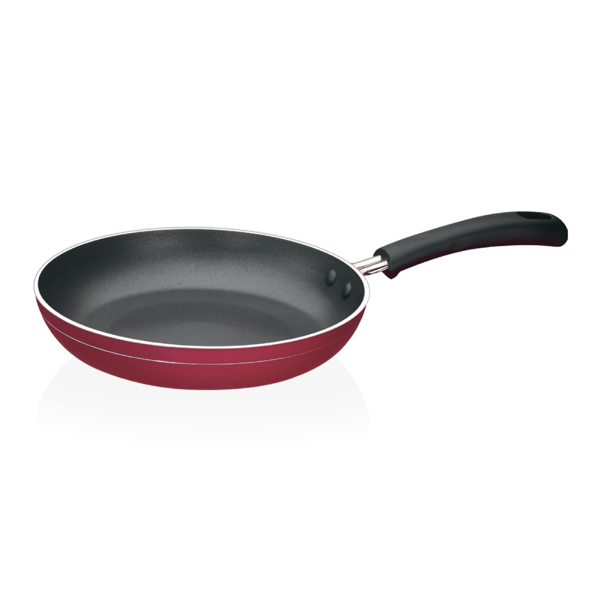
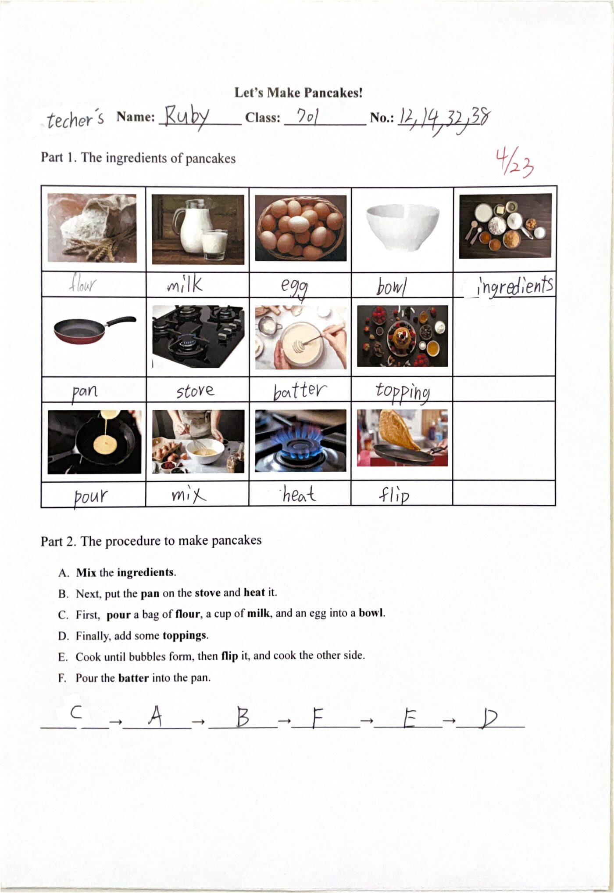
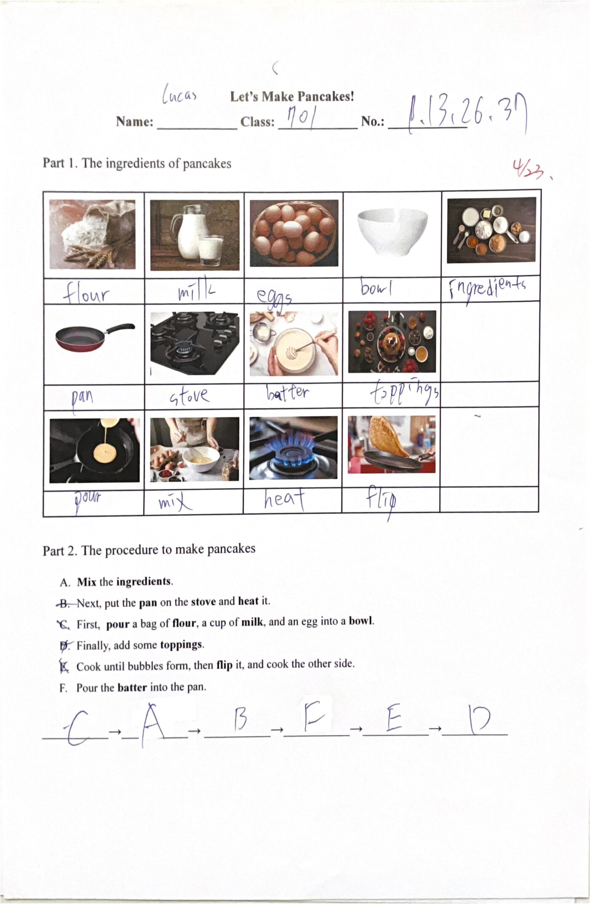
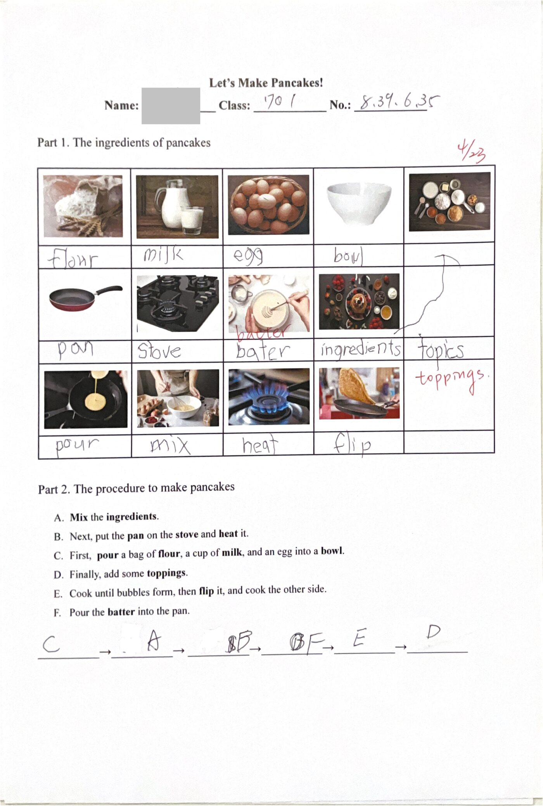
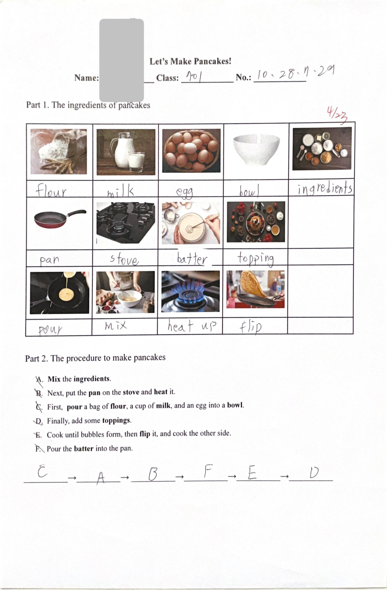
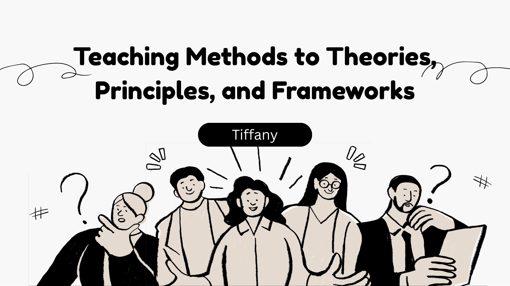

辨認鬆餅食材與相關動詞的主題單字。
Journey
見習歷程
從三月到五月，跟著翰林版國中英語（一下）的課程進度，走進一間又一間真實的英語課堂。
-
文法 · 704
現在簡單式
用接龍造句帶學生複習三單動詞變化，再練習頻率副詞和簡單式的問句。
-
文法 · 701
Wh- 訊息問句
老師用不同顏色的粉筆標出句子結構，讓學生一眼就看懂問句怎麼問。
-
外師協同 · 701
Saint Patrick's Day
用影片和討論帶出節日文化，還讓學生試著用英文聊聊臺灣有沒有類似的節慶。
-
歌唱比賽 · 701
A Million Dreams
班際英語歌唱比賽的練唱，外師用英文解釋歌詞、中師在旁用中文輔助，幫學生訂下做得到的小目標。
-
音樂主題 · 701
Music Genre
從學生喜歡的曲風切入，再帶到比較抽象的音樂類型，先把興趣勾起來，再進到學習。
-
單字收尾 · 701
Unit 5 單字
歌唱比賽的最後練唱，還有老師怎麼用生活情境，把單字、文法和實際對話串在一起。
Demo Lesson
試教教案
這是我獨立設計並試教的一堂課，也是整個見習中最完整的一次實戰。
Unit 4 · 翰林版 114 國中英語（一下）
How Much Flour
Do You Need?
Let's Make Pancakes!
用「做鬆餅」當主題，把可數／不可數名詞、量詞和步驟句型，藏在一份學生會想動手完成的食譜任務裡。
目標Learning Objectives
理解可數／不可數名詞概念，正確使用 some · a · an 與 a bag of … 等量詞。
應用簡單句型，描述製作鬆餅的材料與步驟。
流程Teaching Procedure
Warm-up
展示食材圖片，讓學生猜這些材料能做出什麼甜點，引發學習動機。
食材與動詞
用簡報圖片呈現食材與相關動詞，建立主題單字庫。
不可數名詞
以「How many / much do we need?」搭配圖片問答，帶出量詞概念。
製作流程 A-F
用圖片呈現鬆餅製作步驟，鼓勵各組發言描述每張圖片在做什麼。
小組食譜任務
4-5 人一組，寫上需要的材料、排列正確的製作流程，完成一份鬆餅食譜。
學習單Let's Make Pancakes!
Part 1 · The ingredients

Part 2 · The procedure
- AFirst, pour a bag of flour, a cup of milk, and an egg into a bowl.
- BMix the ingredients.
- CNext, put the pan on the stove and heat it.
- DPour the batter into the pan.
- ECook until bubbles form, then flip it, and cook the other side.
- FFinally, add some toppings.
H
Feedback from
輔導老師 Teacher Hanna
- 和學生互動良好，暖身問答的效果很好。
- 讚美學生的形容詞可以多替換，給學生的指令可以更明確、更有自信。
- 請學生唸句子時就自信地給指令，請他們唸、或跟著唸。
- 教製作流程時要先把學生的心抓回來，掌控整個教室的節奏。
- 學習單可以一開始就發，讓學生手上有資料、能反覆對照關鍵字。
成果Students' Worksheets
這是學生實際完成的「Let's Make Pancakes!」學習單。他們填上鬆餅食材的單字，排出正確的製作流程，最後由老師批改打分。點開任一張看大圖。




Observations
觀課紀錄
每一次觀課，都是一次仔細看懂課堂的練習。點開卡片，可以對照我「課前的計畫」和「實際教學」，還有我每週的反思。
課前教案 · Pre-observation Lesson Plan ｜ Unit 1, grammar
Objectives
- 複習 Unit 1 單字。
- 讀 Dialogue A，理解主旨。
- 從對話中 highlight 文法重點，讓學生知道文法如何應用。
Procedure
- 暖身複習單字，抽選學生做隨機小測。
- 朗讀課本對話。
- 講解內容、highlight 文法。
- 從對話提問，確認學生理解文法點。
Assessment
- 學生應習得本單元單字。
- 理解文法並知道如何運用。
實際教學
- Warm-up：small talk、複習單字與三單動詞變化（加 s/es/ies）。
- 接龍造句：抽選國小動詞寫上黑板，學生配合主詞做動詞變化、依序造句。
- 用星期數代表重複次數，帶出 on Sundays / every Sunday 的差別。
- 示範簡單式疑問句，說明助動詞的用法。
我的反思
接龍造句這類教學活動能有效提升學生參與度，讓原本枯燥的文法練習變得有趣。當學生需要配合主詞做動詞變化、實際運用頻率副詞時，比單純講解更能加深印象。未來我會持續運用互動式教學，讓學生在練習中內化文法。
課前教案 · Pre-observation Lesson Plan ｜ Unit 1, grammar（wh- 訊息問句）
Objectives
- 複習原問句（yes/no 問句）。
- 學習 wh- 問句。
- 學生能理解 yes/no 問句並知道如何造出 wh- 問句。
Procedure
- 暖身複習原問句，抽選學生做隨機小測。
- 用課本例句教授 wh- 問句。
- 講解文法、highlight 重點（do/does 的運用）。
- 抽選學生回答課本練習，確認理解。
Assessment
- 學生應已學會 yes/no 問句。
- 理解如何造出 wh- 問句。
實際教學 · 教學技巧
- 很常讓全班一起造句，提升課堂參與度。
- 用不同顏色的粉筆把關鍵資訊 highlight 起來，看起來很清楚。
- 學生停留太久時，老師會直接給選項讓學生選（例如：do or does）。
我的反思
我學到「視覺化鷹架」在文法教學中的關鍵作用。老師用不同顏色粉筆把句子做區塊切割，把線性的句子結構轉化為層次分明的圖式。當動作與地點被區隔開來，學生更直觀地理解不同 Wh- 疑問詞對應的結構位置，有效降低了認知負荷。
課前教案 · Pre-observation Lesson Plan ｜ 第二堂 Unit 2, vocabulary
Objectives
- 複習 Unit 2 單字。
- 小考 Unit 2 單字。
- 預習 Unit 2 文法。
Procedure
- 暖身複習單字，抽選學生用 Unit 2 單字造句。
- 進行一個短小考。
- 預習 Unit 2 文法：先給中文情境，再轉換成英文情境，帶出頻率副詞概念。
Assessment
- 考完第二課單字。
- 寫講義作業。
實際教學（第一堂 · 文化主題）
- 先說明本節學習目標，提問「Have you heard of St. Patrick's Day?」引起興趣。
- 介紹節日歷史與特色：四葉草、Leprechaun、把河水染綠，每段都停下來問問題。
- 討論：在臺灣有沒有類似的節慶？學生用英文直譯臺灣習俗，氣氛熱烈。
- 播放影片（搭配中文字幕），用引導式問答化解較難的字詞。
- 找四葉草小遊戲，練習 left / right / up / down 的方位用語。
我的反思
老師留時間讓全班討論並參與其中、提供引導，是很好的 discussion engagement。文化課不只是知識傳遞，更是創造一個讓學生願意開口的英文情境。第二節單字課則用講小故事、補充相似詞、標星號重點字等方式幫助記憶。
課前教案 · Pre-observation Lesson Plan ｜ 第二堂 Unit 3, vocabulary
Objectives
- 複習 Unit 3 單字。
- 小考 Unit 3 單字。
Procedure
- 暖身複習 Unit 3 單字。
- 引導式教學，提供情境脈絡讓學生便於記憶單字。
- 進行小考。
Assessment
- 考完第三課單字。
實際教學（第一堂 · 歌唱練唱）
- 先播歌曲暖身，鼓勵會唱的學生跟唱。
- 外師英文解釋歌詞、中師中文輔助（例如 lost my mind = crazy）。
- Half and Half 遊戲：左右兩邊輪流比誰唱得大聲。
- 使用 karaoke 版本反覆練唱與複習。
我的反思
針對抽象詞彙，老師用即時的簡單定義建立連結，而非單純翻譯，保留了語言學習的語境。老師也幫學生設定具體目標（從 4/10 推進到 6/10），用可達成的小目標推動學生再努力一點，比單純口頭鼓勵更有效。
課前教案 · Pre-observation Lesson Plan ｜ 第一堂 班際比賽練唱
Objectives
- 複習上次練唱的進度。
- 完成最後一部分的練唱。
Procedure
- 暖身複習歌曲，抽部分學生示範。
- 安排小遊戲增加 engagement。
- 讓學生熟悉歌詞、練唱。
Assessment
- 熟悉練唱比賽內容。
實際教學（第一堂 · 音樂主題）
- Warm-up：分享自己喜歡的音樂或歌手（K-POP、R&B、Hip Hop）。
- 解釋 genre 是「a style of music」，關鍵字 Vocals、Lyrics 讓學生跟讀。
- 猜音樂類型遊戲：播一小段音樂讓學生猜，對答案時再多做解釋。
- 緊湊轉場銜接班際比賽練唱。
我的反思
透過 Canva 簡報與 YouTube 音樂的靈活搭配，老師把生硬的音樂分類教得像 podcast 一樣生動。我學到：與其強迫 drill 學生記單字，不如先創造一個「想聽、想猜」的情境，一旦學生有了表達興趣，後續的文法與單字教學便能事半功倍。
課前教案 · Pre-observation Lesson Plan ｜ 第二堂 Unit 5, vocabulary
Objectives
- 複習 Unit 5 單字。
- 小考 Unit 5 單字。
- 教剩下部分的單字。
Procedure
- 暖身複習 Unit 5 單字。
- 引導式教學，提供情境脈絡幫助記憶。
- 三態的講義練習。
- 小考（分三態考 / 單字考）。
Assessment
- 考完第五課前半的單字。
實際教學現場
- 練唱最後調整，建立信心、鼓勵學生大膽開口唱。
- 有學生說「誰在乎這比賽」，老師不責備，而用認真陪伴的態度回應。
- Unit 5 單字：用情境聯想（搭公車→公車站）連結名詞概念。
- 延伸 stop to talk vs. stop talking、瞬間動詞 die / dying 的概念。
我的反思
讓我印象深刻的是老師在情緒處理上的高情商，以專業態度取代情緒反應，用身教消弭尷尬。把 die（瞬間動詞）與動態變化 dying 結合，並透過追問（What's up? What's the matter?）讓單字轉化為問句應用，把 Vocabulary、Grammar 與 Functional Language 三者融會貫通。
Videos
教學影片
三段課堂實錄，直接看真實的英語課是怎麼上的。
Gallery
課堂相簿
黑板上的板書、電子白板、學生討論、歌唱練習。點開任一張，放大看現場。
Reflection
反思與成長
修習「Teaching Practice in English」這一學期，我對英語教學的理解，以及自己的改變。
對英語教學理解的成長
過去我對教學的認知多侷限於傳統教師的單一授課，但在見習期間，我學到「協同教學」的重要性。協同教學需要更細緻的共備過程，也要求實習教師具備跨領域的協作能力，以應對多元的課堂情境。
面對的挑戰與克服
我面臨的最大挑戰是指令下達得不夠明確，這源於缺乏自信。雖然教學專業無法一蹴可幾，但我已學會將它視為「熟能生巧」的過程，透過每次教學機會有意識地優化指令邏輯，確保資訊傳遞的精準度。
未來如何持續精進
老師給的箴言「You Don't Have to Be Perfect to Be Great!」提醒我，不該焦慮於不足之處，而要多肯定自己已達成的部分。這種心態調整讓我能更泰然地接受多元的教學方法與創新教材，把它們轉化為課程設計的養分。

14 頁 · 點擊瀏覽Bonus Material
Chit-chat 完整版
見習期間整理的課堂閒談與英語互動素材，從教學法到理論、原則與框架，完整 14 頁都在這裡。